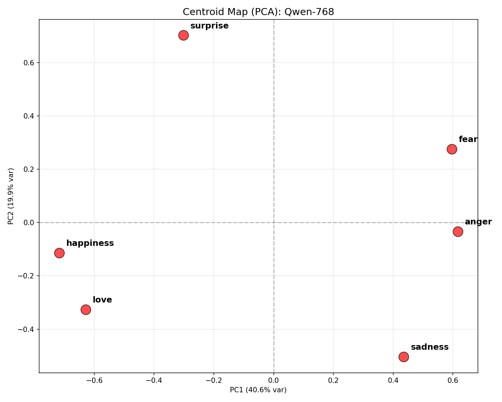
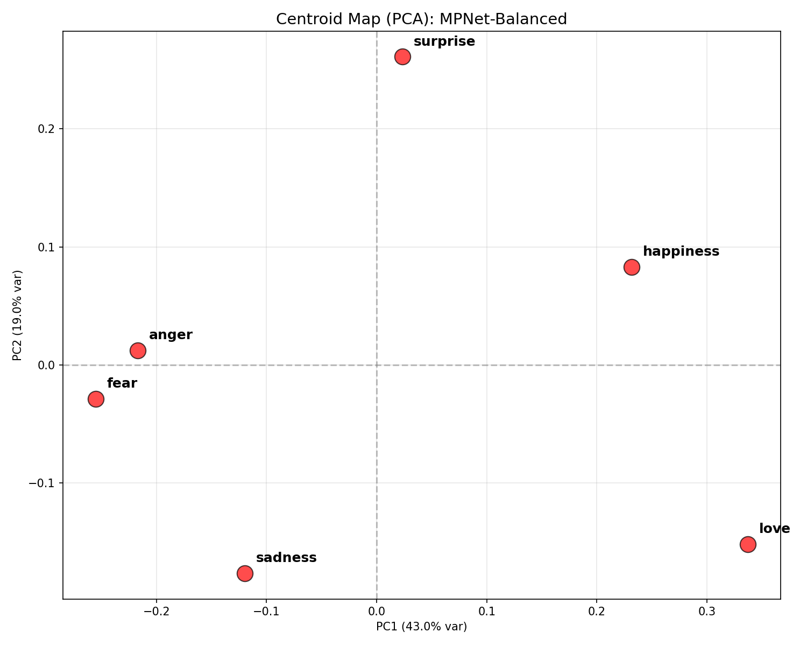
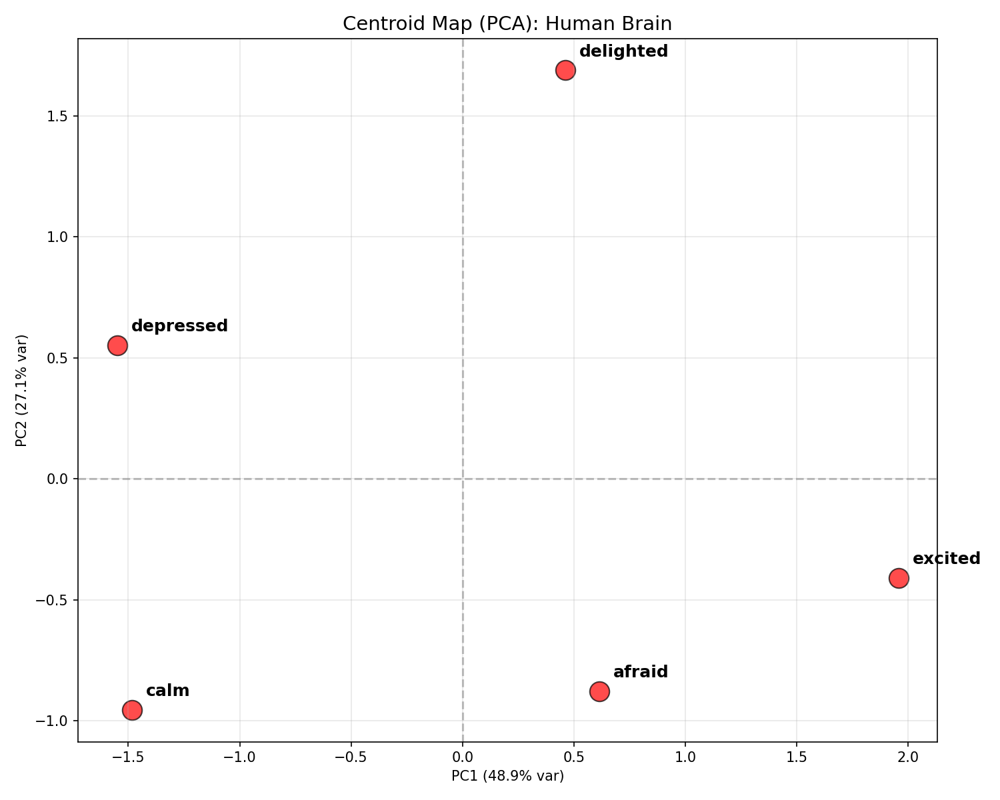
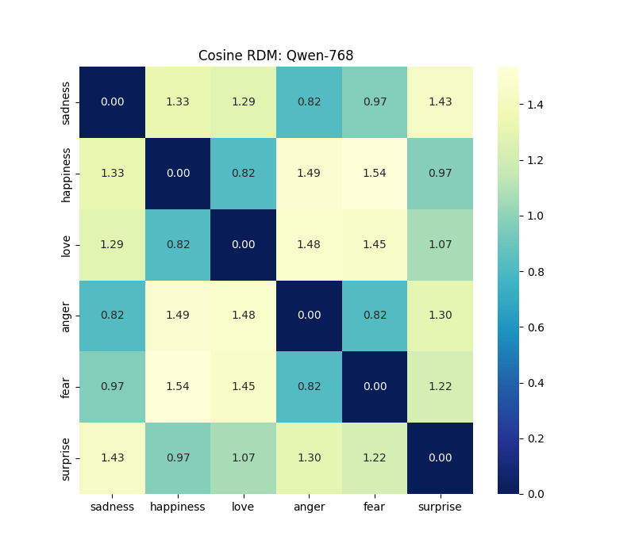

Centroid Relational Geometry Analysis
This study investigates the **Internal Logic** of emotional representations by analyzing the spatial relationships between centroids in biological (Human fMRI) and artificial (LLM) manifolds.
1. Statistical Validation: The "Relational Paradox"
| Metric (Brain vs. Qwen-768) |
Value |
Interpretation |
| Pearson Correlation (r) |
-0.8756 |
Strong Negative Systems are topologically inverted. |
| Brain Noise Ceiling |
[0.4595, 0.4839] |
Human consistency is positive; AI actively deviates. |
| 95% Bootstrap CI |
[-0.9967, 0.6994] |
Stable negative trend across resamples. |
| Manhattan (L1) Robustness |
-0.5476 |
Findings are independent of the distance formula. |
2. Affect Maps: PCA Topological Layout
Visualizing the conceptual "Map of Affect." Emotions closer together share similar internal representations.
Qwen-768 Map

MPNet-Balanced Map

Human Brain Map

3. Distance Matrices (Cosine RDMs)
Qwen-768 RDM

4. Key Interpretations: Valence vs. Arousal
- AI Semantic Logic: Groups *Fear* and *Sadness* as similar because they share negative **Valence**. In text, they often appear in identical contexts.
- Human Neural Logic: Groups *Happiness* and *Sadness* more closely than *Fear*, likely because both are lower in **Arousal** (Intensity) compared to the acute alert state of Fear.
- Conservation of Topology: While the logic is "flipped," the stability of the centroids and the high consistency across metrics proves that both systems have highly organized, non-random emotional geometries.
5. Conclusion
The strong negative correlation (-0.88) proves that Transformer-based LLMs do not yet replicate the arousal-dominant prioritization of human emotional circuits. To achieve true biological alignment, future embedding models may require explicit regularization toward physiological intensity features.